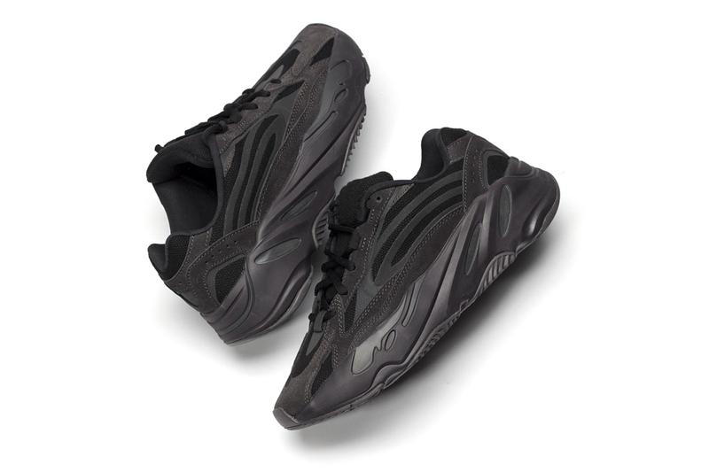

HIGHFASHN
Мода
Обувь
Взгляните на adidas YEEZY BOOST 700 V2 "Vanta"
Показывая выдающуюся 3M отражающую детализацию.

Вскоре после того, как мы получили образ на ноге, мы еще раз взглянем на некоторые детали предстоящего adidas YEEZY BOOST 700 V2 «Vanta».
На этот раз кроссовки Kanye West выполнены в монохроматическом цвете, отмеченном черным верхом из сетки, подчеркнутым тональной строчкой и серыми замшевыми накладками высшего качества, которые выражают динамические линии модели. Но именно выдающаяся деталь 3M действительно определяет обувь, отражающие элементы обнаружены на носке, три полоски с надписью на средней части стопы и вокруг перфораций вокруг области пятки. Наконец, скульптурная чёрная межподошва с поддержкой BOOST, украшенная утопленными серыми стручками и интересной потёртой черной резиновой подошвой, завершает дизайн обуви.
По цене 300 долларов США adidas YEEZY BOOST 700 V2 «Vanta» должен выйти на adidas.com, YEEZY SUPPLY и выбрать розничных продавцов 29 июня.